Задачи по физике
Равномерное прямолинейное движение
Задача 1
Графики каких движений показаны на рисунке? Как отличаются скорости движения этих тел? В какой момент времени тела встретились? Какие пути тела прошли до встречи?

Задача 2
На рисунке представлены графики зависимости координаты двух тел от времени. Графики каких зависимостей показаны? Какой вид имеют графики зависимости скорости и пути, пройденного телом, от времени?

Задача 3
На рисунке представлен график зависимости пути от времени. Определите по графику скорость движения велосипедиста в интервале от момента времени 1 с до момента времени 3 с после начала движения. Ответ дайте в метрах в секунду.

Задача 4
Движение материальной точки задано двумя графиками пути от времени. Какой из графиков соответствует большей скорости движения тела?

Задача 5
По графику v = v(t) прямолинейного движения определите путь, пройденный телом за 30 с.

Прямолинейное равноускоренное движение
Задача 1
На рисунке представлены графики зависимости вектора скорости от времени при прямолинейном движении двух тел. С каким по модулю ускорением движется тело 1 и 2? Запишите уравнение скорости.
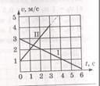Задача 2
По графику зависимости модуля скорости тела от времени, представленного на рисунке, определите путь, пройденный телом от момента времени 0 с до момента времени 2 с. (Ответ дайте в метрах.)
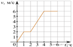Задача 3
На рисунке представлен график зависимости модуля скорости тела от времени. Найдите путь, пройденный телом за время от момента времени 0 с до момента времени 5 с. (Ответ дайте в метрах)
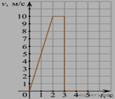Задача 4
Тело движется по оси Ox. На графике показана зависимость проекции скорости тела на ось Ox от времени. Каков путь, пройденный телом к моменту времени t = 4 с? (Ответ дайте в метрах.)
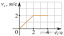Задача 5
Тело движется по оси Ох. По графику зависимости проекции скорости тела vx от времени t установите, какой путь прошло тело за время от t1 = 0 до t2 = 4 с. (Ответ дайте в метрах.)
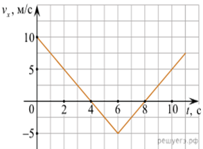Криволинейное движение
Задача 1
Самолет выполняет «мертвую петлю», описывая в вертикальной плоскости окружность радиуса 250 м. Во сколько раз вес летчика в нижней части траектории больше, чем сила тяжести, если скорость самолета равна 100 м/с?
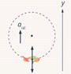Задача 2
Спутник Земли движется по круговой орбите на высоте 1000 км от поверхности Земли. С какой скоростью движется спутник? За какое время спутник совершит один полный оборот вокруг Земли?
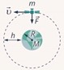Задача 3
С какой частотой нужно вращать ворот колодца, чтобы ведро поднималось со скоростью 1 м/с, если радиус сечения ворота равен?
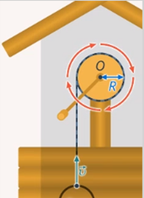Задача 4
Определить, с какими скоростями движутся точки А, В и С, расположенные на концах секундной, минутной и часовой стрелок часов. Принять длину секундной и минутной стрелок равной 14 мм и длину часовой стрелки – 10 мм.
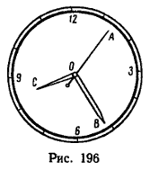Задача 5
Подвешенный на нити шарик равномерно движется по окружности в горизонтальной плоскости. Какой вектор указывает направление вектора равнодействующей всех сил, приложенных к шарику?
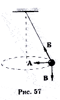Движение тела, брошенного под углом к горизонту
Задача 1
Советская 122-мм полковая самоходная гаубица 2С1 «Гвоздика» производит выстрел под углом 45о к горизонту. Начальная скорость снаряда составляет 618 м/с. Определите: время и дальность полета снаряда в горизонтальном направлении, его скорость в момент падения и максимальную высоту подъема. Сопротивлением воздуха и баллистическими данными снаряда можно пренебречь.
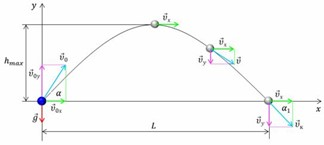Задача 2
Стоя на холме, который образует с горизонтом угол 60 градусов, мальчик бросает камень со скоростью 12 м/с под углом 30 градусов к его поверхности. Определите время полета камня, а также его максимальное удаление от поверхности холма. Сопротивлением воздуха можно пренебречь.
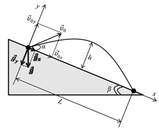Задача 3
Игрушечная пушка установлена на краю стола. Из нее можно стрелять с одинаковой начальной скоростью маленькими шариками в любом направлении. Шарики взрываются в воздухе через время T=1 с после выстрела. На расстоянии H=5 м от пушки, под углом \beta=60^\circ к горизонту, висит воздушный шар. Под каким углом к горизонту надо стрелять, чтобы шарики разрывались как можно ближе к шару? Сопротивлением воздуха пренебречь. Ускорение свободного падения g=10 м/с^{2}. В ответе выразить тангенс искомого угла, округлив до десятых.
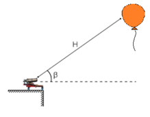Задача 4
Бросив камень под углом 45 градусов к горизонту, необходимо попасть в цель, находящуюся на расстоянии L=12 м от места бросания и на высоте h=2 м. С какой скоростью необходимо бросить камень?
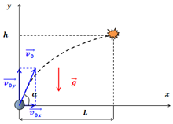Задача 5
Под углом 60 градусов к горизонту брошено тело с начальной скоростью 20 м/с. Через сколько времени оно будет двигаться под углом 45 градусов к горизонту?